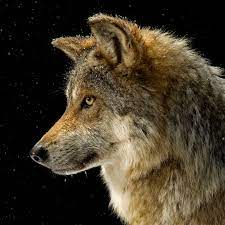

This is a link to a practice website,My first webpage This is a demo project that uses HTML and intergrates CSS. It also has active links that navigated to different pages.
You can also check hello world It uses HTML only since it was a guide on how to do it.
Programming is a course that makes one able to learn a language in which computers user to carry out tasks . There are several programming languages such as Java, C++, Scala e.t.c
The main reason why I choose to take a programming cource is beacause the fascination of fashioning complex puzzle-like objects of interlocking moving parts, and watching them work in subtle cycles, playing out the consequences of principles built in from the beginning. Very well put. Not only do programs have complex structure and dependencies, there is also the dynamics of the interaction between the parts as the program executes. The ultimate puzzle indeed!